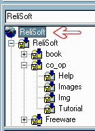

How can I use Code Co-op with Macromedia HomeSite?
HomeSite, like many other applications, supports the SCC interface. Follow these steps:
- Create (or join) a Code Co-op project on your local machine. It should contain your HTML files as well as images and other resources
- Create a project in HomeSite with the same root as your Code Co-op Project
- Right-click on the root of the project, select "Choose Source Control Provider" from the context menu--select Code Co-op

- Right-click again and select "Map Project to Source Control"
That's it. Next time you try to open a file in this project, HomeSite will ask you if you want to check it out. If you are planning to edit the file, click "Yes."